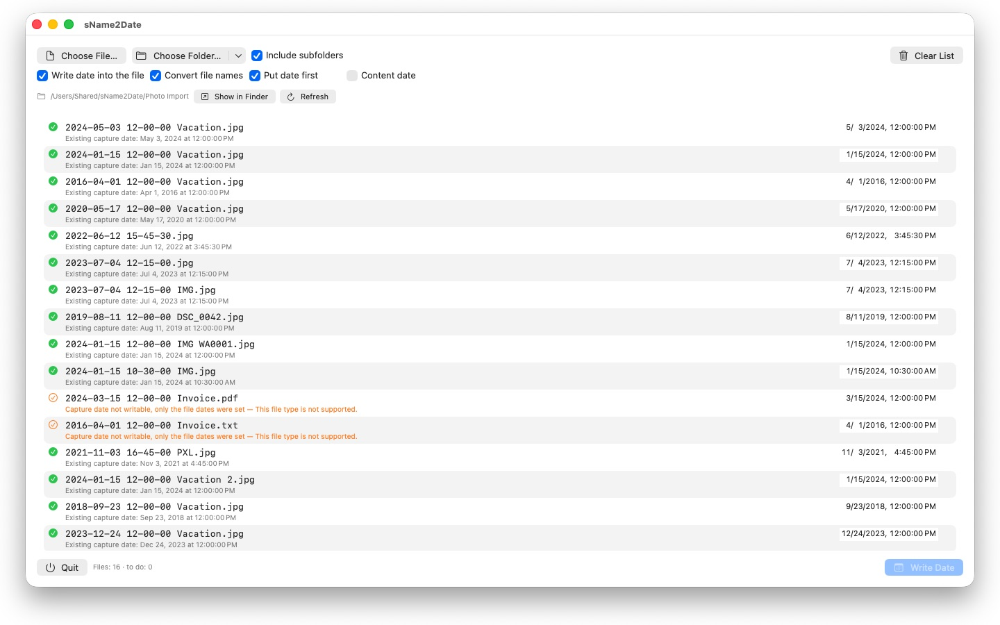

sName2Date
From file name to capture date
Coming to the Mac App Store · October 2026Photos without a capture date sort themselves nowhere. sName2Date takes the date from the file name and writes it where every photo library looks for it.

What it does
Reads the date from the name
IMG_20240115_103000, Vacation 15.01.2024, 15 Jan 2024, 2016 04 — the common notations, month names in your system language and in English. If there is no date at all, you type it in, back to 1826.
Writes it where software looks
EXIF DateTimeOriginal and DateTimeDigitized plus TIFF DateTime for JPEG, PNG, TIFF, HEIC and GIF; the creation date inside the container for MP4, MOV, M4V, M4A and M4B.
Leaves the pictures alone
A JPEG is not recompressed, a video is not re-encoded. For movies the app usually changes just a few bytes inside the container — even a large file is done in an instant.
Even files without a capture date
PDFs, text, spreadsheets, archives get the file’s creation and modification date instead. Or clear one checkbox and sName2Date only brings the name into ISO notation.
Whole folders
Entire directory trees in one go, skipping files that already have a capture date if you wish.
Everything can be taken back
A run is undone completely with ⌘Z — capture date, file timestamps and the changed file name. ⇧⌘Z restores it.
sName2Date Lite — free. The edition for one file per run: read the date from the name, set it by hand, write it as the capture date, bring the name into ISO notation and take everything back with ⌘Z. The same capabilities as sName2Date, just without entire folders.
- Requires macOS 12 or later
- 25 languages
- Support: SwiftAppsBavaria@gmx.net
More apps
sCollect
Music, movies, books and other collections in one library — your edits land in the files themselves.
SwiftRename
Rename files in batches — by capture date, numbered consecutively, or sorted into year and month folders.
sVectorLift
Open, view, and save old vector clip art as SVG — CorelDRAW, Windows Metafile, and CGM.